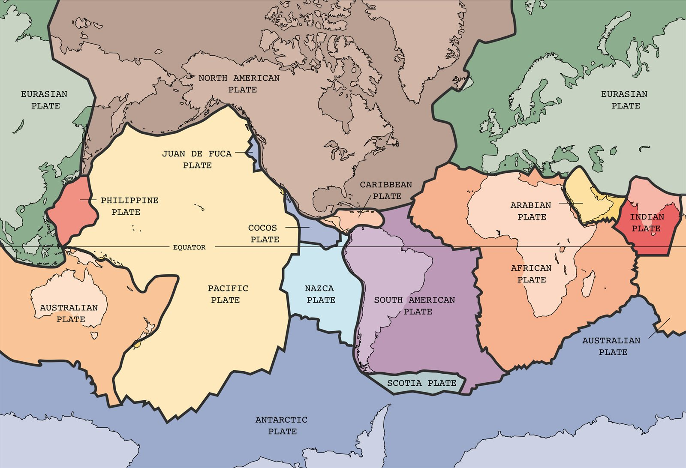

Convección del manto y tectónica de placas
Bajo tus pies hay casi 3000 kilómetros de roca que, a simple vista, es perfectamente sólida. Para nuestra escala de tiempo, es sólida. Pero en millones de años se comporta como un líquido espesísimo que sube, se enfría y baja. Esa convección lentísima es, según lo que hoy se acepta, lo que mueve los continentes.
Debajo de las placas litosféricas, el manto puede fluir, aunque lentamente, ante fuerzas constantes aplicadas durante mucho tiempo [1]. El Servicio Geológico de Estados Unidos lo compara con el acero, que se ablanda y cambia de forma con calor y presión: la roca del manto puede hacer lo mismo a lo largo de millones de años [1]. A escalas de tiempo largas, la roca del manto se comporta como un fluido [2].
La masilla que rebota: la masilla de silicona rebota como una pelota si la tirás, pero se derrite como un charco si la dejás sobre la mesa. El manto hace algo parecido: a escala humana es sólido, y en millones de años es un fluido.
¿Puede algo tan viscoso tener convección? La respuesta la da el número de Rayleigh, el mismo que gobierna la convección de Rayleigh-Bénard en una olla. Compara la flotación que impulsa el flujo con la difusión de cantidad de movimiento y de calor que la frenan [2]:
Podría pensarse que la viscosidad enorme deja al número muy chico. Pero, como señala D. H. Rothman, del Instituto de Tecnología de Massachusetts, Ra crece con el cubo del tamaño, y para el manto d es de casi 3000 kilómetros [2]. Las estimaciones dan entre 3 × 10⁶ y 10⁹, de mil a un millón de veces el valor crítico [2]. La incertidumbre viene sobre todo de la viscosidad, que es objeto de debate y varía un factor de alrededor de 300 con la profundidad [2]. Pero aun así, Ra está holgadamente por encima del umbral [2]. Si el tamaño se reduce a la mitad, Ra se divide por 8 (un cálculo propio): el tamaño es lo que salva la convección.
El manto se calienta por la desintegración radiactiva de uranio, torio y potasio, y por el calor que quedó de la formación de la Tierra [2]. Según el Servicio Geológico de Estados Unidos, los científicos coinciden en general con la teoría de Harry Hess: la fuerza que impulsa las placas es el movimiento lento del manto caliente y ablandado que hay debajo de ellas [1]. La idea la consideró por primera vez Arthur Holmes en la década de 1930: un movimiento circular que lleva los continentes como una cinta transportadora [1].
El dibujo clásico es una olla de sopa espesa: lo caliente sube, se extiende y se enfría, y después se hunde [1]. El propio Servicio Geológico aclara que la analogía no tiene en cuenta las enormes diferencias de tamaño y de velocidad [1]. Las placas que se hunden se ablandan y pierden su forma por debajo de unos 700 kilómetros [1].

Una idea que costó aceptar: cuando Wegener propuso la deriva continental, la mayoría de los científicos creía que la Tierra era un cuerpo sólido e inmóvil [1]. J. Tuzo Wilson lo dijo en 1968: la Tierra, en lugar de parecer una estatua inerte, es algo vivo y móvil [1]. Rothman concluye que la convección es probablemente la fuerza que impulsa las placas [2], y los detalles de ese mecanismo siguen siendo tema de investigación.
La roca del manto fluye a lo largo de millones de años, y como su espesor es enorme, el número de Rayleigh queda muy por encima del umbral, aunque la viscosidad sea gigantesca. Es la misma convección de una olla, a otra escala de tamaño y de tiempo. Lo que para nosotros es sólido, para la Tierra es un fluido en movimiento.
Pregunta para la comunidad: Un material puede ser sólido o líquido según cuánto tiempo lo mires. ¿Tendría sentido que existiera una escala de tiempo que separara los dos comportamientos?